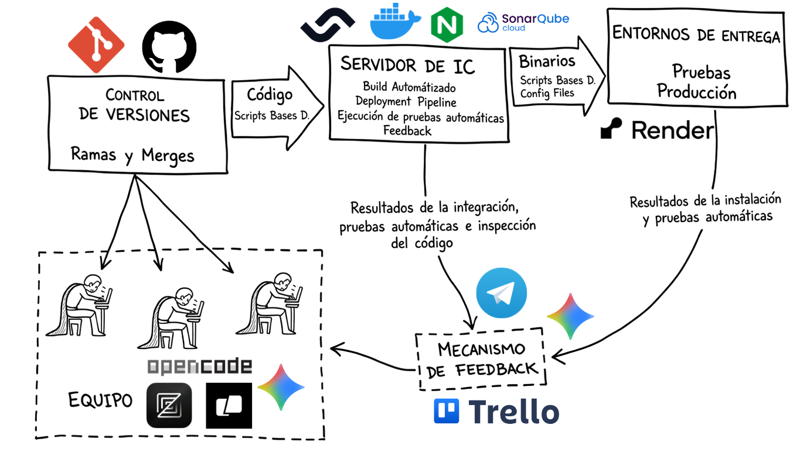

Continuous Integration · Continuous Delivery
CI/CD pipeline components and integration

Git + GitHub · Feature-branch strategy · Branch protection
feature/*) and integrated via Pull Request.[2DOP-01]) that Trello uses for automatic tracking.Semaphore CI · 3 sequential blocks · Automated validation
run_contract_test.sh — if it fails, the pipeline is aborted and feedback is activated via Trello + Telegram + Gemini AI.Automated contract · Gemini AI · Generated fix-plan
index.html must be exactly "MINOLI". No extra spaces or additional text.run_contract_test.sh extracts the body text, cleans HTML tags, and compares against the contract.ask_gemini.sh sends the error + code + requirements to Gemini 2.5 Flash.fix-plan.md with: Detected Error, Root Cause, Steps to Fix, and Final Verification.Multi-channel notifications · Extreme traceability
[2DOP-01]) and the fix-plan is attached in case of error.
MINOLI — CI/CD Pipeline · 2nd Evaluation Instance